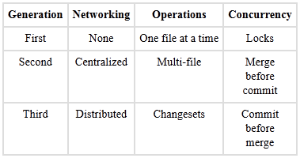
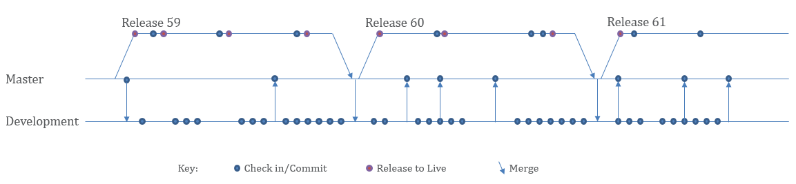
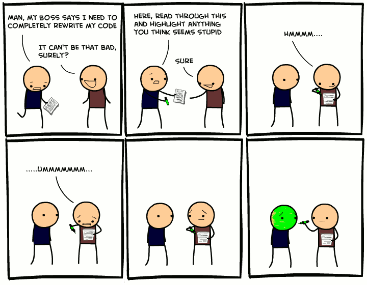
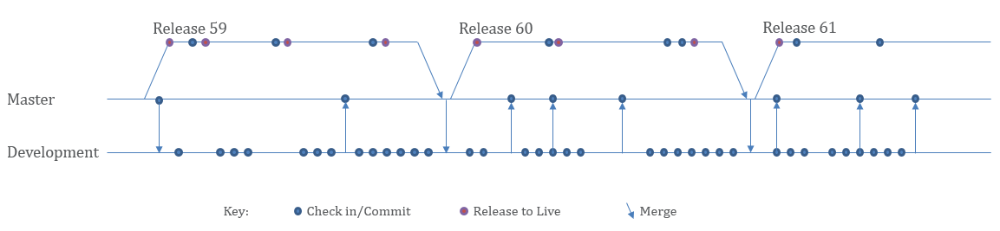
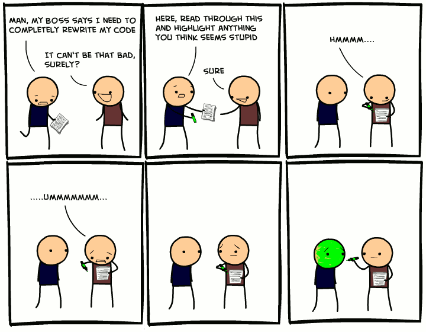

Vault to Git Introduction

andy davies

 



- git pull
- git checkout development
- git checkout -b history-screen-bugfix
- # some work...
- git add .
- git commit -m "frmLiason: re-arranged ui"
- # more work...
- git add .
- git commit -m "frmLiason: fixed update handler to check for bad phone data"
- #code review
- git checkout development
- git merge history-screen-bugfix
- git push